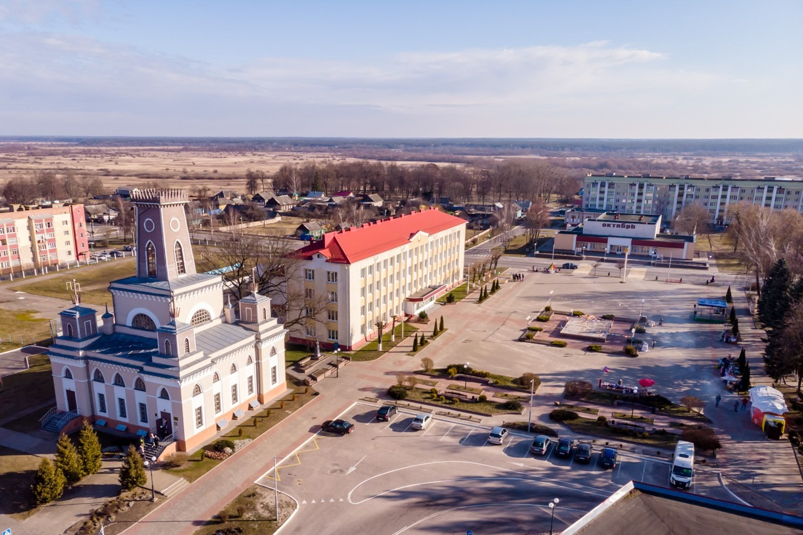
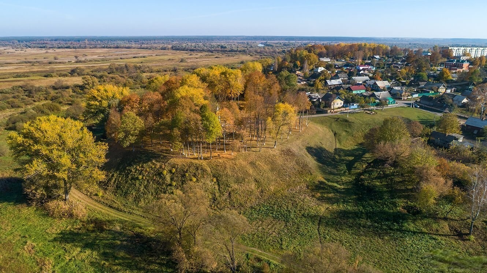

история района
Чечерский район расположен на северо-востоке Гомельской области. Территорию района с юга на север пересекает река Сож, на берегу которой находится административный центр Чечерщины – город Чечерск. Район образован в 1926 году и с 1938 года входит в Гомельскую область.
У деревни Бердыж Чечерского района находится одна из древнейших стоянок человека на территории Беларуси. Возраст предметов, найденных сначала случайно местными жителями, а затем археологами, доходит до 26 тысяч лет. На стоянке кроманьонцев нашли скребки, каменные наконечники копий, домашнюю утварь и останки древних животных.
Селение на месте нынешнего Чечерска возникло в конце 9 столетия в районе впадения реки Чечёра в Сож. Письменно впервые упоминается в летописи 1159 года. В 14 веке вошел в состав ВКЛ. В конце 18 века город и окрестные земли вошли в состав России и были переданы во владение генерал-губернатору З.Г. Чернышеву.
При его управлении город расцвел, были построены больницы, церковь, театр и другие важные объекты. Некоторые из них сохранились до наших дней.
Ратуша в Чечерске
В 1511 году Чечерск получил право на самоуправление, так называемое Магдебургское право. И тогда же, для рады было построено специальное помещение – деревянная ратуша, не сохранившаяся до настоящего времени.
Об этом памятнике имеется не так уж много исторических данных. Известно, что когда-то ратуша стояла посреди обширной квадратной площади, имела большие часы с боем, и на башне ее стоял сторож, возвещавший о приезде гостей. Около ратуши находились торговые лавки, около 76. Остальные сведения зачастую исключают друг друга и могут только запутать. Невозможно, например, выяснить, какой этажности была ратуша: все источники приводят разное количество этажей, зависящее, вероятно, от того, что понимал каждый из авторов под словом «этаж». Мы не знаем ни первоначального вида, ни автора, ни точного времени ее строительства.
В 1772 году, после раздела Речи Посполитой, Чечерск вошёл в состав Российской империи, а уже через год, в 1773 году местечко перешло во владение Захара Григорьевича Чернышёва. По его настоянию и началось строительство новой, каменной ратуши. Год начала строительства и имя архитектора история умалчивает, сейчас здание датируется концом XVIII века. Без-Корнилович (1855 г.) описывает это здание так: «…Среди обширной площади, четырехстороннее здание Ратуши, с 5 на верху башнями, имеющими 2 этажа каменных и 2 деревянных».
С 1880–1917 гг. в здании ратуши располагалось городское самоуправление, аптека, коммерческое училище. 1917–1941 г. – зоотехникум. 1941–1943 гг. – тюрьма немецко-фашистских захватчиков. 1943–1974 гг. – сельхозтехникум, школа и отдел образования. 1972 – здание подверглось пожару. 1976–2004 г. – ремонтно-реставрационные работы. 2004 г. – ГУК «Чечерский историко-этнографический музей».
Здание ратуши было сильно повреждено пожаром в 1972 году, при котором были уничтожены все деревянные конструкции ратуши, ремонт здания шёл методом народной стройки: по мере возможности предприятия города и субъекты аграрного сектора выделяли рабочих и стройматериалы. С 1997 года ремонтно-восстановительные работы взяла на себя «Гомельреставрация». Здание ратуши было торжественно открыто 24 сентября 2004 года в день празднования 845-летия города Чечерска.

Бердыжская палеолитическая стоянка
Расположена в 3 км к югу от деревни Бердыж Ленинского сельского Совета Чечерского района на склоне высокого правого берега р. Сож, в урочище Колодежки, состоящем из северного и южного оврагов. До 2000-х годов в 0,3 км к северу от стоянки находилась деревня Подлужье.
Культурный слой на глубине 0,3–0,7 м залегает в толще суглинка и лучше всего сохранился в южной части урочища. Здесь были обнаружены остатки 4 овальных в плане жилищ размером 5,5–11 Х 4,5–5,5 м, с открытым очагом в центре, и 5 хозяйственных ям диаметром 2,4–3 м и глубиной 0,6–0,8 м, в строительстве которых использованы черепа, крупные плоские и трубчатые кости мамонта и других животных. Найдены кремневые наконечники копий с боковой выемкой, ножи, боковые, угловые и серединные резцы, острия типа граветт, скребки, ножи-кинжалы, рубящие орудия, ретушеры, отбойники, нуклеусы, а также пластины из бивня мамонта с геометрическим орнаментом.
Открыта в 1926 году К. М. Поликарповичем. По легенде, в процессе разведок в долине Сожа выдающийся белорусский археолог остановился у ручья у деревни Подлужье и разговорился с пастухом, сидевшим на огромном валуне. Ученый заметил, что это не камень, а череп взрослого мамонта, облепленный землей и потерявший форму от длительного пребывания на поверхности. Пастух рассказал К. М. Поликарповичу, что каждой весной в половодье из реки на берег вымывает множество костей. В первом же шурфе, заложенном на вершине склона, были найдены кремни, обработанные рукой человека, и кости.
Впервые же подробно стоянка была исследована в 1927 году С. Н. Замятниным, в дальнейшем в ее изучении принимали участие ведущие специалисты в области первобытной археологии, а также палеонтологи, геологи и палеогеографы. Общая площадь раскопок составила около 536 кв. м. Согласно полученным данным, территория поселения занимала около 500 кв. м.
Датируется XXV – XXIV тысячелетиями до Р. Х. (верхний палеолит – древний каменный век), относится к памятникам костенковско-вилендорфской культуры и вместе со стоянкой в Юровичах Калинковичского района считается одним из двух древнейших человеческих поселений на территории Беларуси.
Материалы раскопок хранятся в Национальном историческом музее Республики Беларусь и Институте истории Национальной академии наук Беларуси.
Памятник внесен в Государственный список историко-культурных ценностей Республики Беларусь.
Городище и Замковая гора в Чечерске
Находится на северо-восточной окраине города. Занимает мыс коренного берега р. Чечера. Состоит из детинца овальной формы (площадь около 1 га) и окольного города (площадь больше 2-х га).
Детинец разделяет дугообразный вал вышиной 5-х, шириной около 20-ти метров. Раскопки проводили в 1928 году А.М. Левданский и С.А. Дубинский, в 1974-1975 гг. М.А. Ткачев, в 1984 году В.В. Богомольников. Культурный пласт на детинце в южной части около 0,4 метра и в северной до 4 метров.
Окольный город существовал в I веке, система его оборонных сооружений состояла из земляного вала, рва, деревянных стен, веж-ворот с подъемным мостом перед въездными вежами-воротами. На замковом дворе размещались хозяйские постройки.
В 1957 году на этом месте был воздвигнут памятник советским воинам и партизанам, а также могила Лилии Карастояновой – болгарской патриотке, корреспондентке «Комсомольской правды».
Городище находится на южно-восточной окраине города. Занимает мыс коренного берега реки Чечеры. Состоит с детинца овальной формы, площадью около 2-х га и окольный город – площадью 2 га. Детинец разделяет дугообразный вал высотой 5 м, широта около 20-ти метров.
Раскопки проводили в 1928 году Левданский А.М. и Дубинский З.А. В 1974–1975 гг. – Ткачев М.А., в 1984 г. – Богомольников В.В. Культурный пласт на детинце южной части около 0,4 м и в северной до 4 м.
Посад возник в XI столетии. Уже в то время посад был укрепленный деревянной оборонческой стеной, позже – волам с наваленными деревянными конструкциями и рвом перед ним.
Материалы археологических исследований свидетельствуют, что на Замковой горе уже в неолите существовала поселение, в бронзовом и железном веках городища тоже ни пустовало.
В XVI–XVIII столетиях в Чечерске существовал замок. Замок занимал мыс коренного берега реки Чечера. Площадка замка возвышалась над поймой на 14 метров. От города замок был отделен рвом шириной 20–25 метров и глубиной 7 метров. Замок был обведен земляным волам с деревянными стенами.
С псевераи востока по внешнему и внутренних склонах вала шли две траншеи, заполненные глиной, что предотвращала расползание насыпи вала. В середине XVI столетия через оборонческий ров был переброшен подъемный мост, который вел к уездным замковым воротам. Деревянные рубленые стены замка были обмазаны глиной, что сводила к минимуму возможность зажечь их специальными выстрелами, и сохраняла от гниения.
В XVII столетии на Замковой Горе находилась 8 башен, одна с которых являлась башней-воротами в три этажа и была увенчана куполам, а тоже сосновый двойной острог. Вход запирали дубовые ворота с входной форткой, обитые железными шинами. Нижний этаж башни-ворот занимали две тюрьмы и глубокая яма со срубом, куда сажали воров. С размещенного на втором этаже зала попадали на третий этаж.
Тут было просторное помещение и выхождение на боевую зашалёванную галерею. Вверху под самым куполом размещались бойницы и боевой помост для стрелков. Замковые хозяйственные построения (ледник, двухэтажный лямус, конюшня) были обнесены палисадом «с досок дубовых местами в два совета, а местами в три советы поставленных» в каких были сделаны бойницы.
В XVI столетии Чечерский замок неоднократно осаждали крымские татары и русские армии, но взять его не смогли. В замке постоянно размещался небольшой гарнизон казаков во главе с ротмистром. Во время военных событий гарнизон увеличивали. В антифеодальную войну 1648–1651 годов в апреле 1649 года Чечерском овладели восставшие крестьяне.
В русско-польскую войну город и замок неоднократно осаждали русские армии, в результате чего замковые укрепления сильно потерпели и были восстановлены только после войны.
В 1802 году на замковой горе на место старого замка был построен большой дворец графини Анны Родионовны Чернышевой, крестной матери Александра I. Но сведений о нём практически не сохранилась. Известно, что он был построен в готическом стиле, имел форму полукруга и был окружён большим пейзажным парком. Само троение было окружено рвом, наполненным водой с реки Чачёра.
Через ров был переброшен подъемный мост на цепях. Внизу, в прудах, разводилась рыба разных пород. Дворец упоминается в документах 1855 года, в то время он находился в запустения. Согласно описанию 1884 года, дворец уже не существовал, а его место занимали разные посадки.
Здесь на Замковой горе в память в 1957 году был воздвигнут памятник советским воинам и партизанам, погибших в годы Великой Отечественной войны. Величаво возвышается он над Замковой горой. В братской могиле похоронено 442 солдата и партизана, которые отдали жизнь за освобождение Чечерска.
Рядом покоится прах патриотки белорусского и болгарского народов, корреспондентки газеты «Комсомольская правда» Лилии Карастояновой, которая погибла 1943 года в бою с гитлеровцами у деревни Будище.
Дворец Чернышевых-Кругликовых в Чечерске
Дворцово-парковый ансамбль (бывшее имение Чернышевых-Кругликовых) сложился в первой половине XIX века.
Здание дворца перестраивалось многократно, а свой окончательный вид получило в 1860 году. Благодаря тому, что Чечерск находился на большой почтовой дороге из Киева в Санкт-Петербург, город неоднократно посещали знатные особы: Павел I, Екатерина II, А.С. Пушкин и др.
С 1905 г. в здании размещалась земская школа II ступени. В 1925 г. она была переименована в «Белорусскую школу» с семиклассным образованием. В годы Великой Отечественной войны постройка была сожжена, перестроена и преобразована в конюшню.
После Великой Отечественной войны тут размещалась детская библиотека, Дом пионеров и вечерняя школа. В связи с ремонтом лечебницы в 1975 г. здесь размещались некоторые кабинеты больницы.
С 2002 г. здание передано отделу культуры райисполкома и снова достраивалось. В этот период в архитектуре господствовал эклектизм – упор был направлен на внешнюю декоративность фасада, архитекторы часто произвольно объединяли в здании формы готики, ренессанса, барокко и создавали конгломерации архитектурных форм и стилей, которые тяжело определить.
Чечерская Спасо-Преображенская церковь
Храм Преображения Господня (Чечерская Спасо-Преображенская церковь) – является памятником эпохи классицизма республиканского значения.
Это каменный 2-х ярусный храм-ротонда (в плане круг с внутренним диаметром около 15 метров), увенчан полусферическим куполом на ступенчатом барабане. Над бабинцем (прямоугольный в плане объем с фронтоном на главном фасаде) построена восьмериковая башня-колокольня, покрытая граненым куполом. Храм Преображения Господня был возведен в конце XVIII века по заказу графа Захара Григорьевича Чернышева.
До настоящего времени сохраняются разночтения о точном времени постройки храма и авторе его проекта. По мнению московского историка архитектуры И.Н.Слюньковой он построен в 1779 году. По мнению белорусского исследователя архитектуры В.А.Чантурия храм построен в 1783 году. Храм Преображения Господня был возведен в ансамбле с тремя другими храмами, которые, к сожалению, до настоящего времени не сохранились.
Согласно сведениям могилевского губернатора 80-х годов XIXв. А.С.Дембовецкого, автором чечерских храмов являлся известный архитектор Франческо Бартоломео Растрелли (род. в 1700 г. В Париже), что конечно же маловероятно. В 1774 году, когда Екатерина II подарила Чечерск З.Чернышеву, великого зодчего уже не было в живых, он скончался в 1771 году в Санкт-Петербурге. Поэтому с полной уверенностью можно утверждать, что план переустройства Чечерска и соответственно проекты чечерских храмов не принадлежат Растрелли. Об этом говорят архитекторы Г.Жаровина и Демура, которые выдвинули свою гипотезу: они считают, что автор проектов чечерских церквей известный русский архитектор Василий Баженов. Историки И.Слюнькова и В.Пилявский приводят сведения, что автор проекта Спасо-Преображенской церкви другой известнейший архитектор-итальянец Джакомо Кваренги.
Построенный в XVIII веке каменный храм Преображения Господня в г.Чечерске имел предшественника - деревянную православную Спасскую церковь, которая впервые упоминается в Инвентаре Чечерского староства 1726 года. После заключения Брестской церковной унии 1596 г. восток Беларуси и Чечерск в том числе оставались верным оплотом православия. Однако власти Речи Посполитой в XVIII веке усилили давление на православную церковь.
В Реестре монастырей и церквей православной веры, принудительно забранных униатами в первой половине XVIII века мы читаем: «1743 года, сентября 13. Церкви четыре в местечке Чечерск: одна Воскресенская, другая Николаевская, третья Рождества Пресвятыя Богородицы, четвертая Преображенская (ранее в Инвентаре 1726 г. названная Спасской, - примеч. автора), через помещика Казимира Турчина, мечника Оршанского, содержателя Чечерского, и пятая Гергиевская в селе Нисимковичах».
Через 30 лет в 1773 году Чечерск вошел состав Российской империи и вскоре униатские церкви были возвращены в лоно православной церкви. По сведениям А.С.Дембовецкого во всех чечерских храмах, построенных по приказу графа З.Г.Чернышева, в 1882 году находилось по два образа (Вознесения Господня и Успения Пресвятой Богородицы), писанные приглашенным в Чечерск итальянским живописцем, во всех церквях имелась дорогая серебряная утварь и ризы. В сложный ХХ век, годы атеизма, гонений на церковь, годы войны были разрушены 2 чечерских православных храма и кладбищенская часовня, а также костел Святой Троицы, уничтожено большинство икон. Выстояла только Спасо-Преображенская церковь.
В ее алтаре ранее хранилась древняя икона XVII века «Сошествие во ад», - великолепный шедевр белорусского искусства, сейчас там находится её копия, а оригинал размещается в Национальном художественном музее РБ. Кириллическая надпись на его раме сообщает, что «сей образ оферовал Янъ Санковичъ до храму Воскресенія Христова в Чечерску на честь и на хвалу Господу Богу. Року 1678».
В 1897 году Чечерск посетил епископ Могилевский и Мстиславский Мисаил. «Могилевские Епархиальные ведомости» в отчете об этом событии сообщали: «Приписная Спасо-Преображенская церковь, снаружи и внутри неблаговидная, сырая; от сырости и запущенности отваливается по местам штукатурка. Богослужения совершаются в этой церкви очень редко; утварь посредственная». Однако вскоре именно Спасо-Преображенской церкви была уготована судьба центра православия на Чечерщине.
Согласно данным «памятной книжки Могилевской губернии на 1914 год» в Спасо-Преображенской церкви служил священник Иоанн Пищиков. Это год, когда началась первая мировая война. Однако впереди ждали еще большие испытания. Нам не известно, что было с церковью после революции и до начала Великой Отечественной войны. Историк Светлана Силова, опираясь на документы Национального архива Республики Беларусь сообщает, что в Чечерском районе Гомельской области немцы, предварительно разграбив Спасо-Преображенскую и Кладбищенскую Георгиевскую церкви, уничтожив плащаницы и около двадцати икон, написанных монахами и живописцами Киево-Печерской Лавры в XVIII веке, превратили эти храмы в лагеря для военнопленных. Значит до войны церковь продолжала действовать.
Согласно карточки единовременного учета религиозного объединения 13 июня 1946 года было зарегистрировано религиозное общество Чечерской церкви, служители культа: один священник и 1 псаломщик. Несколько ранее было зарегистрировано религиозное общество Дудичской церкви – 21 марта 1945 года (эта церковь, памятник деревянного зодчества XIX века сгорела 19 марта 2002 года). 15 июня 1946 года с исполкомом Чечерского совета депутатов был подписан договор о передаче в пользование прихода Православной церкви церковного здания и культового имущества Преображенской церкви. В числе прочих подписал договор и опись имущества настоятель приходского храма протоиерей Иван Пищиков. Однако согласно документам, имеющимся в Чечерском историко-этнографическом музее до 21 мая 1953 года в Спасо-Преображенской церкви находилось зерно и товаро-материальные ценности райпотребсоюза и конторы заготзерно.
Община православных верующих и протоиерей Иоанн Пищиков продолжали ходатайствовать о возвращении церкви. Этот вопрос рассматривался в Совете по делам Русской Православной церкви при Совете Министров СССР. Заместитель председателя Совета Министров СССР т.Уралова предложила местным властям освободить здание Чечерской церкви и передать его общине верующих. Об исполнении указания т.Ураловой Гомельский облисполком предлагал сообщить к 30 марта 1953 года. Однако Чечерский райисполком саботировал это указание. И только после третьего напоминания о возврате церкви верующим здание храма было освобождено. Храм приняли настоятель Чечерской церкви протоиерей Пищиков и церковный староста Чумаков. Таким образом, прослеживается, что делами Храма Преображения Господня в г.Чечерске с 1915 года и до 1953 года занимался протоиерей Иоанн Пищиков, благодаря его трудам храм пережил все катаклизмы ХХ века, был возвращен верующим и сейчас является украшением нашего города.
